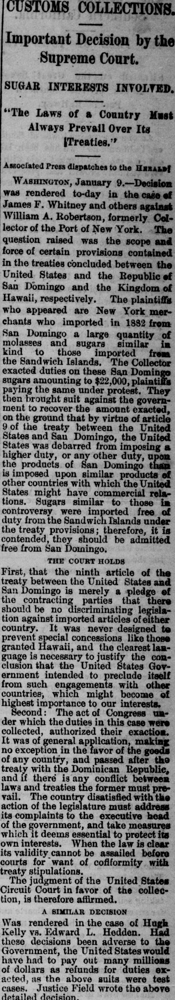
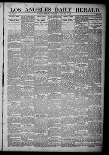

THE COURT HOLDS r irst, that the ninth article of the treaty between the United States and San DomingoLA CORTE SOSTIENE primero, que el artículo noveno del tratado entre los Estados Unidos y Santo Domingo
Los Angeles Daily Herald. Los Angeles [Calif.], January 10, 1888. Page 1. Published by Herald Steam Print. House. A daily newspaper, 1884–1890.Los Angeles Daily Herald. Los Angeles [Calif.], 10 de enero de 1888. Página 1. Publicado por Herald Steam Print. House. Periódico diario, 1884–1890. View the originalVer el original


See the full pageVer la página completaThe newspaper reported on a court decision regarding sugar imports from San Domingo compared to those from the Sandwich Islands. The court held that the treaty with San Domingo only pledged against discriminating legislation and did not prevent special concessions like those granted to Hawaii. Furthermore, the court ruled that the Act of Congress authorizing the duties was of general application and, having been passed after the treaty, must prevail in any conflict between laws and treaties.A partir del fragmento provisto, el diario dio cuenta de un fallo judicial relativo a la importación de azúcares de Santo Domingo en parangón con los procedentes de las islas Sandwich. La corte dictaminó que el tratado con Santo Domingo únicamente comprometía a evitar leyes discriminatorias y no impedía concesiones especiales como las conferidas a Hawái. Resolvió por añadidura el tribunal que la ley del Congreso que autorizaba el cobro de aranceles era de aplicación general y, habiendo sido sancionada con posterioridad al tratado, debía prevalecer en cualquier conflicto entre leyes y convenios.
FULL TEXT:TEXTO COMPLETO:
Los Angeles Daily Herald January 10, 188810 de enero de 1888
Always Prevail Over Its Treaties.Siempre prevalecen sobre sus tratados.
Associated Press dispatches to the HERALD:Despachos de la Prensa Asociada al HERALD:
WASHINGTON, January 9.—Decision was rendered to-day in the case of James F. Whitney and others against William A. Robertson, formerly Collector of the Port of New York. The question raised was the scope and force of certain provisions contained in the treaties concluded between the United States and the Republic of San Domingo and the Kingdom of Hawaii, respectively. The plaintiffs who appeared are New York merchants who imported in 1882 from San Domingo a large quantity of molasses and sugars similar in kind to those imported from the Sandwich Islands. The Collector exacted duties on these San Domingo sugars amounting to $22,000, plaintiffs paying the same under protest. They then brought suit against the government to recover the amount exacted, on the ground that by virtue of article 9 of the treaty between the United States and San Domingo, the United States was debarred from imposing a higher duty, or any other duty, upon the products of San Domingo than is imposed upon similar products of other countries with which the United States might have commercial relations. Sugars similar to those in controversy were imported free of duty from the Sandwich Islands under the treaty provisions; therefore, it is contended, they should be admitted free from San Domingo.WASHINGTON, 9 de enero.—Hoy se dictó decisión en el caso de James F. Whitney y otros contra William A. Robertson, antiguamente Recaudador del Puerto de Nueva York. La cuestión planteada fue el alcance y fuerza de ciertas disposiciones contenidas en los tratados concluidos entre los Estados Unidos y la República de Santo Domingo y el Reino de Hawái, respectivamente. Los demandantes que comparecieron son comerciantes de Nueva York que importaron en 1882 desde Santo Domingo una gran cantidad de melaza y azúcares similares en clase a los importados desde las Islas Sandwich. El Recaudador exigió derechos sobre estos azúcares de Santo Domingo que ascendían a $22,000, los demandantes pagando los mismos bajo protesta. Entonces trajeron demanda contra el gobierno para recuperar la cantidad exigida, bajo el fundamento de que en virtud del artículo 9 del tratado entre los Estados Unidos y Santo Domingo, los Estados Unidos estaban impedidos de imponer un derecho más alto, o ningún otro derecho, sobre los productos de Santo Domingo que el impuesto sobre productos similares de otros países con los que los Estados Unidos pudieran tener relaciones comerciales. Azúcares similares a los en controversia fueron importados libres de derechos desde las Islas Sandwich bajo las disposiciones del tratado; por tanto, se sostiene, deberían ser admitidos libres desde Santo Domingo.
THE COURT HOLDSLA CORTE SOSTIENE
First, that the ninth article of the treaty between the United States and San Domingo is merely a pledge of the contracting parties that there should be no discriminating legislation against imported articles of either country. It was never designed to prevent special concessions like those granted Hawaii, and the clearest language is necessary to justify the conclusion that the United States Government intended to preclude itself from such engagements with other countries, which might become of highest importance to our interests.Primero, que el noveno artículo del tratado entre los Estados Unidos y Santo Domingo es meramente una promesa de las partes contratantes de que no debería haber legislación discriminatoria contra artículos importados de ninguno de los dos países. Nunca fue diseñado para prevenir concesiones especiales como las otorgadas a Hawái, y el lenguaje más claro es necesario para justificar la conclusión de que el Gobierno de los Estados Unidos pretendió excluirse a sí mismo de tales compromisos con otros países, que podrían llegar a ser de la más alta importancia para nuestros intereses.
Second: The act of Congress under which the duties in this case were collected, authorized their exaction. It was of general application, making no exception in the favor of the goods of any country, and passed after the treaty with the Dominican Republic, and if there is any conflict between laws and treaties the former must prevail. The country disatisfied with the action of the legislature must address its complaints to the executive head of the government, and take measures which it deems essential to protect its own interests. When the law is clear its validity cannot be assailed before courts for want of conformity with treaty stipulations.Segundo: La ley del Congreso bajo la cual se cobraron los derechos en este caso, autorizó su exacción. Era de aplicación general, sin hacer excepción en favor de las mercancías de ningún país, y aprobada después del tratado con la República Dominicana, y si hay algún conflicto entre leyes y tratados las primeras deben prevalecer. El país insatisfecho con la acción de la legislatura debe dirigir sus quejas al jefe ejecutivo del gobierno, y tomar las medidas que considere esenciales para proteger sus propios intereses. Cuando la ley es clara su validez no puede ser atacada ante las cortes por falta de conformidad con estipulaciones de tratados.
The judgment of the United States Circuit Court in favor of the collection, is therefore affirmed.La sentencia de la Corte de Circuito de los Estados Unidos en favor del cobro, es por tanto afirmada.
A SIMILAR DECISIONUNA DECISIÓN SIMILAR
Was rendered in the case of Hugh Kelly vs. Edward L. Hedden. Had these decisions been adverse to the Government, the United States would have had to pay out many millions of dollars as refunds for duties exacted, as the above suits were test cases. Justice Field wrote the above detailed decision.Fue dictada en el caso de Hugh Kelly contra Edward L. Hedden. Si estas decisiones hubieran sido adversas al Gobierno, los Estados Unidos habrían tenido que pagar muchos millones de dólares en devoluciones por derechos exigidos, ya que los pleitos anteriores eran casos de prueba. El juez Field escribió la decisión detallada anterior.